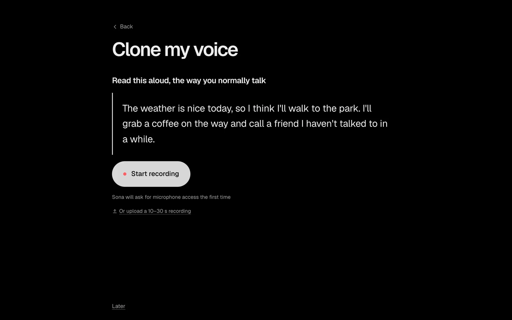
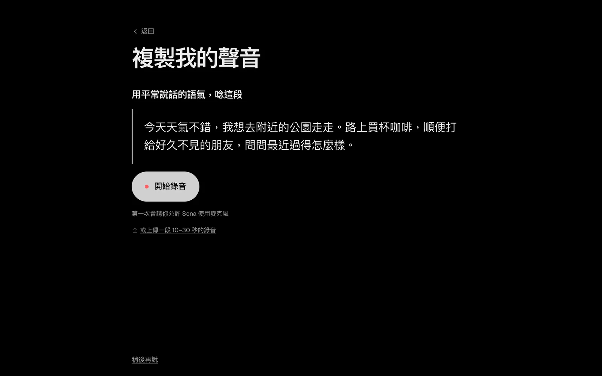

Write songs.
Speak in your own voice.
寫歌，
也用你自己的聲音說話。
On your own computer. Free, open source, no account. 全部在你的電腦上跑。免費、開源、不用帳號。


Your voice你的聲音
Read a paragraph aloud for 15 seconds. Then type anything and hear it in your voice, in seconds. 照著唸一段話，大約 15 秒。之後打什麼字，幾秒內就用你的聲音念出來。
Add tone修飾語氣
Your own Claude Code or Codex rewrites flat text the way people actually talk. You choose whether to use it. 用你自己的 Claude Code 或 Codex，把照稿念的文字改成真人說話的語氣，要不要套用由你決定。
Songs寫歌
Describe a style, add lyrics, get a sung song. Or an instrumental, or a cover of a song you upload. 寫下風格和歌詞，生成一首有人聲的歌。也能做純音樂，或把上傳的歌換個風格重唱。
Stems拆軌
Split any song into vocals, drums, bass and the rest. Mute or solo each part. 把一首歌拆成人聲、鼓、貝斯和其他，每一軌都能單獨靜音或獨奏。
Starts with one question一打開，先問你想做什麼
Pick music or your voice. Sona downloads only what that needs, only versions that run on your machine, and you can pause anytime. 選做音樂或複製聲音。Sona 只下載那條路需要、你這台電腦跑得動的模型，下載隨時可以暫停。


- Voice聲音複製
- Mac, Apple Silicon, 16 GB memoryMac（Apple Silicon），記憶體 16 GB
- Songs寫歌
- Mac, or Windows with an NVIDIA GPUMac，或有 NVIDIA 顯示卡的 Windows
- Privacy隱私
- Recordings and songs stay on your computer錄音和歌都留在你的電腦上
- License授權
- AGPL-3.0. Some models are non-commercialAGPL-3.0；部分模型限非商業使用